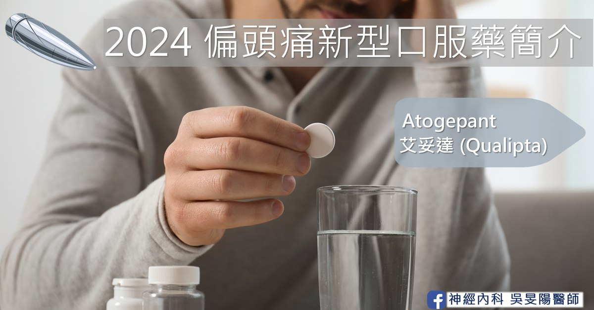

偏頭痛標靶藥│2024 新型口服 Gepant － Atogepant 艾妥達

上一篇為各位介紹了 Gepant（吉朋）類藥物的機轉及亮點。本文會介紹台灣的新型口服預防用藥 – Atogepant（Aquipta、艾妥達）。
面對偏頭痛，除了止痛藥，預防性治療也扮演重要角色。預防性藥物不僅可以改善偏頭痛發作頻率、疼痛持續時間、頭痛嚴重度、以及生活品質，也可減少病人反覆就醫的花費，並減少止痛藥物依賴的風險。針對病人每月頭痛發作＞4 天以上、或是嚴重影響生活品質，就應該要考慮加上預防性藥物（可參考連結我需要預防治療嗎？）。
「偏頭痛」還有專門的用藥？不是外面藥局止痛藥買一買就好了嗎？
資料來源：Wang YF, et al. Treatment pattern and health care resource utilization for Taiwanese patients with migraine. Front Neurol 2023
儘管偏頭痛的患者非常多，但偏頭痛常被認為它只是一種症狀，不是個需要特別治療的疾病；或者是被當作一種小病，就像感冒一樣，只要到藥局買成藥吃，把痛壓下來就好，身體會自己適應，於是許多偏頭痛患者並未接受適當的治療。台北榮民總醫院神經科科主任王嚴鋒醫師，於 2023 年的一篇論文分析，只有兩成的患者使用了預防性藥物，這表明這些藥物的利用不足。
資料來源：Wang YF, et al. Treatment pattern and health care resource utilization for Taiwanese patients with migraine. Front Neurol 2023
偏頭痛治療不足的狀況，除了在台灣，美國也有同樣的問題，甚至更為嚴重。根據美國的研究表示，偏頭痛的患者約只有一半的病人被正確診斷出來，只有三成左右的的病人使用急性止痛藥物，甚至只有一成多的病人使用預防藥物。
三個有效的臨床試驗
在先前有關於偏頭痛 CGRP 的機轉介紹中，提到在三叉神經的末梢，此藥物可以鎖住 CGRP 的受體結合位，如此抑制血液中 CGRP 跟受體的結合，藉此阻斷疼痛訊號往下傳遞。
該藥的實證療效主要來自於三個臨床試驗，分別是：
- 針對陣發性偏頭痛族群的 ADVANCE 試驗
- 針對慢性偏頭痛族群的 PROGRESS 試驗
- 針對用了 2~4 種傳統口服預防性用藥，仍失敗的難治型族群 ELEVATE 試驗。
ADVANCE（陣發型偏頭痛）
ADVANCE 主要是在美國所執行的雙盲性研究，並加入對照組。收案對象是陣發性偏頭痛（每個月偏頭痛發作天數 4 天～14 天）的族群，共收案了 910 位病人。且這群病人加入試驗之前，他們都有偏頭痛病史至少 1 年以上的時間，並且有 7 成曾經使用過其他預防藥物。
這 910 位病人中，大約有 8 成病人為女性，平均年齡在 40 歲上下，他們平均頭痛的天數約為每個月 7.5～7.9 天，大約頭痛時間可以到一週。值得注意的是，此試驗並不包含懷孕婦女、哺乳婦女，近六個月內有嚴重心血管事件或是腦中風的病患也被排除在外。
這些病人被隨機分配成 4 組，分別接受了安慰劑（作為對照組）、每日個別服用一次的 Atogepant 10mg、30mg、以及 60mg。在治療 12 週之後，與安慰劑相比，可以減少 3.7～4.2 天的每月頭痛天數（安慰劑組為 2.5 天）。若從每月平均偏頭痛天數減少的比例來看，減少一半以上的占比為 55.6～60.8% 的病人。
資料來源：Ailani J, et al. N Engl J Med 2021;385(8):695-706
資料來源：Ailani J, et al. N Engl J Med 2021;385(8):695-706
從 ADVANCE 試驗延伸出來的分析研究得知，上述病人當中，光是治療開始的第一週，就可以看到頭痛天數有明確減少的趨勢。這種現象在接受 Atogepant 60mg 劑型的族群身上較為顯著，也就是說，有感的偏頭痛患者，在開始使用第一週的第一天，就會感到差別。
PROGRESS（慢性偏頭痛）
PROGRESS 試驗中，收案對象是慢性偏頭痛的族群（每個月偏頭痛發作天數 15 天以上），共有 775 人。一樣排除了懷孕婦女、哺乳婦女，以及有嚴重心血管、或是腦中風的患者。比較特別的是，該試驗也排除了偏頭痛發作時會有意識不佳、複視症狀、以及視覺前兆的患者。
總收案的族群一樣大多數為女性，平均年齡約為 40 歲，每個月偏頭痛發作天數高達 18～19 天。同時研究對象可以同時使用其他傳統口服急性止痛藥物，例如翠普登類、非類固醇消炎藥等等。
資料來源：Pozo-Rosich P, et al. Lancet 2023;402(10404):775-785
資料來源：Pozo-Rosich P, et al. Lancet 2023;402(10404):775-785
這些慢性偏頭痛病人被分為 3 組，分別接受了安慰劑、每日服用 Atogepant 30mg 兩次、以及每日服用 Atogepant 60mg 一次。在治療 12 週之後，與安慰劑相比，可以減少 6.9～7.5 天的每月頭痛天數（安慰劑組為 5 天）。
ELEVATE（陣發型偏頭痛合併治療困難之族群）
此試驗中，收案對象為陣發型偏頭痛（每個月偏頭痛發作天數 4 天～14 天），且在過去已經嘗試 2～4 種的口服預防藥物，卻都無效的族群。這 315 位病人被隨機分配成 2 組，分別接受安慰劑、以及每日服用 Atogepant 60mg 一次。
在治療 12 週之後，與安慰劑相比，可以減少 4.2 天的每月頭痛天數（安慰劑組僅為 1.9 天）。若從每月平均偏頭痛天數減少的比例來看，減少一半以上的占比為 50.6% 的病人（安慰劑組僅為 18.1%）。
資料來源：Tassorelli C, et al. Lancet Neurol 2024;23(4):382-392
資料來源：Tassorelli C, et al. Lancet Neurol 2024;23(4):382-392
藥物副作用
資料來源：Ailani J, et al. N Engl J Med 2021;385(8):695-706
主要以腸胃道，以及泌尿道症狀為主。前四個常見的副作用分別為：便祕（6.9%）、噁心感（6.1%）、上呼吸道感染（3.9%）、及泌尿道感染（3.9%）。其中上呼吸道感染與泌尿道感染的發生率與安慰劑相近。
副作用在 Atogepant 10mg、30mg、60mg 三種劑量之間的發生比率類似，並不會因為劑量較高，就容易產生副作用。
Atogepant（Aquipta®，艾妥達®）藥物說明
- 適應症：適用於每個月偏頭痛發作 4 次以上的成人偏頭痛預防
用法與劑量：對於陣發型偏頭痛、及慢性偏頭痛，建議劑量為 60mg 口服，一天服用一次。
- 台灣於 2024 年底上市 60mg 的劑型，另有 10mg 的劑型 2025 年有望引進台灣
- 可隨餐服用、或是空腹服用。不建議剝半使用。
- 半衰期：11 個小時（體內血液中的藥物濃度，降低 50% 所需要的時間。時間越短代表藥效代謝越快）
- 特殊族群：如果為肝臟功能、或是腎臟功能較差，會需要視情況調整。由於收案族群並無孕婦或兒童，對於懷孕女性使用艾妥達的胎兒發育風險，目前尚無足夠資料。
- 藥物交互作用：若同時有服用 CYP3A4 抑制劑（例如抗黴菌藥、部分抗生素、葡萄柚、文旦、柚子等等）或是 CYP3A4 誘導劑（例如部分的抗癲癇藥物），藥物劑量可能需要調整，建議諮詢醫師喔！
- 禁忌症：對藥物成分有過敏現象的人
| AQUIPTA 艾妥達 | 陣發性偏頭痛 | 慢性偏頭痛 |
|---|---|---|
| 一般成人 | 60mg | 60mg |
| 重度腎功能不全或洗腎患者 | 10mg | 避免使用 |
| 輕～中度肝功能不全 | 不需調整劑量 | 不需調整劑量 |
| 重度肝功能不全 | 避免使用 | 避免使用 |
| 老年人（>65 歲） | 不需調整劑量 | 不需調整劑量 |
口服 CGRP ( Gepant ) 哪些患者適合？美國的使用經驗
- 心血管疾病之高風險個案
- 有藥物過度使用之頭痛病患
有懷孕可能的育齡女性
- 雖然懷孕婦女使用資料不足，但是此藥物半衰期較短，「學理上」停藥只要約一週，理論上不太會影響胎兒。
- 相較於CGRP 單株抗體動輒一個月的半衰期，對於有備孕計畫的女性來說較不方便。
- 非末期肝臟病，非末期腎臟病的病人
經濟較寬裕的族群
- 畢竟是新藥，台灣在納入健保之前，藥費對荷包比較不友善…
結語
- 偏頭痛的認識，以及得到正確的治療的比例仍有努力的空間。
- 美國頭痛醫學會最新的建議已將 CGRP 相關藥物的臨床使用順位拉到第一線。
- Atogepant 透過三個臨床試驗證實對於陣發型偏頭痛、慢性偏頭痛、以及難治型族群皆有優於安慰劑的效果。在台灣已被核准作為偏頭痛預防口服用藥。
- 常見的副作用以便秘及噁心感為主。
延伸閱讀
偏頭痛藥物
- 偏頭痛「預防藥治療」攻略：傳統口服藥 (一)
- 偏頭痛「預防藥治療」攻略：長效針劑 (二)
- 偏頭痛「預防藥治療」攻略：長效針劑比較和選擇 (三)
偏頭痛預防性治療攻略：新型口服標靶藥物 (四)
參考資料
- 頭痛電子報 第 228 期 Gepants，作者：敖瑀 醫師
- 台北榮民總醫院 偏頭痛衛教手冊
- AQUIPTA 艾妥達 中文仿單